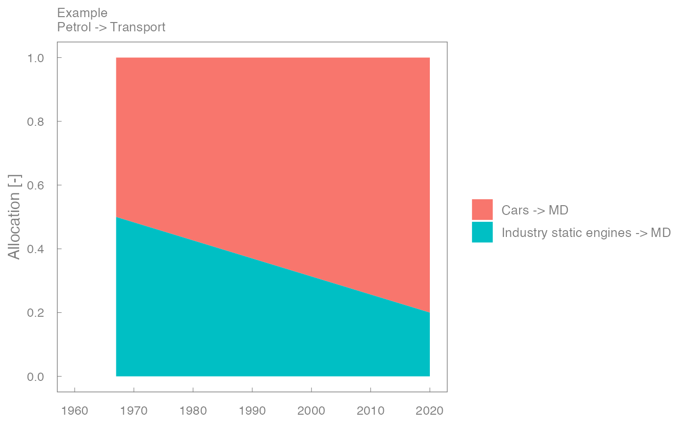

nonstat_alloc_graph.RdCreates an allocation graph from a completed allocation table,
mostly likely created by the assemble_fu_allocation_tables() function.
nonstat_alloc_graph(
.df,
country,
ef_product,
destination,
year = IEATools::iea_cols$year,
.values = IEATools::template_cols$.values,
machine = IEATools::template_cols$machine,
eu_product = IEATools::template_cols$eu_product,
machine_eu_product = paste0(machine, "_", eu_product)
)A data frame comprised of completed final energy allocations.
The country for which this graph applies.
The final energy product for which this graph applies.
The destination sector for the final energy product.
See IEATools::iea_cols.
The name of a combined machine and eu_product column.
A ggplot2 graph object
This function is called repeatedly from nonstat_alloc_plots_df().
country, ef_product, and destination form the title of the graph.
library(ggplot2)
# Make a simple data frame with the expected structure.
tibble::tribble(~Year, ~.values, ~Machine, ~Eu.product,
1967, 0.5, "Cars", "MD",
1967, 0.5, "Industry static engines", "MD",
2020, 0.8, "Cars", "MD",
2020, 0.2, "Industry static engines", "MD") %>%
alloc_graph(country = "Example", ef_product = "Petrol", destination = "Transport")
